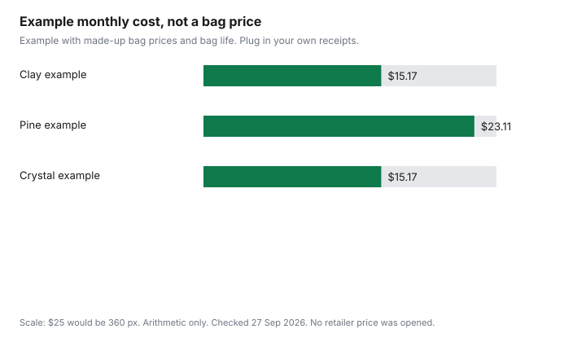

Pets · Canada
Cat Litter Cost per Month in Canada: Clay vs Pine vs Crystal

Your monthly cat litter cost in Canada is the bag price divided by the weeks it lasts, converted to a month. OVMA’s 2025 adult cat sheet prints $258 a year, or $21.50 a month. Litter is a quiet bill because it never looks like the food bag. It is still a unit-price problem: how much you pour, how much you paid, and which bin your city will actually take. This page compares clay, pine, crystal, and the plant-based litters people substitute for them, on a monthly worksheet. No retailer price was published as of 27 Sep 2026, so the chart is a labelled example. The city rules are from the municipal pages cited here. Education only. This is not veterinary advice, and it is not a ranking of brands.
Key takeaways
- Monthly cost is the bag price divided by the weeks the bag lasts, scaled to a year and then a month. No clay, pine, or crystal shelf price is listed here.
- In a labelled example, a $14 clay bag lasting 4 weeks and a $28 crystal bag lasting 8 weeks both come to $15.17 a month. The dearer bag is not the dearer month.
- OVMA’s 2025 adult cat sheet prints litter at $258 a year, which is $21.50 a month if you divide by 12. That line does not split clay, pine, and crystal.
- Toronto’s green bin names clay and wood-pellet litter. Calgary takes all varieties in a certified compostable or paper bag. Vancouver’s green-bin page keeps cat litter out. Montréal lists pet litter with household waste.
- Do not flush litter because a bag says flushable. Metro Vancouver’s pet-waste page says not to flush litter, including litter sold as flushable.
Clay, pine, crystal, wheat/corn and paper: how each works
Clay litter is a mined granule that clumps when it gets wet, in the clumping kind, or that you dump by the tray in the non-clumping kind. Pine litter is often a pellet that breaks down when wet.
Crystal, or silica, litter absorbs into a bead and is usually scooped of solids rather than dumped every few days. Wheat, corn, and paper litters are the plant or fibre alternatives. They are different materials, different weights per scoop, and different things to put in a bin. A “natural” claim on the bag is not a municipal acceptance. The worksheet does not need the marketing word. It needs the price, the size, and how long the bag lasts in your house.
Odour control and dust are why people pay more per kilogram and then feel they saved nothing. Those are real preferences. They are not, on any page cited here, a tested ranking. If you hate a litter, you will use more of the next one or you will throw the bag out. A thrown-out bag is a month you paid for twice. The food cost-per-day guide is the parallel habit: divide before you decide the bigger package won. The household store-brand guide is the same instinct for paper and soap, not a litter test.
Monthly cost formula: usage × price per kg/L
Two formulas, and you only need one. If you know how many weeks a bag lasts, monthly cost is approximately (bag price ÷ weeks per bag) × (52 ÷ 12).
That is the same as bags per year (52 ÷ weeks) times the bag price, divided by 12. If you know kilograms used per week and price per kilogram, monthly cost is weekly kilograms × price per kilogram × (52 ÷ 12). Use litres the same way when the bag is sold by the litre. Do not mix a kilogram price with a litre of a different litter and call it a comparison. Write the unit the shelf used.
Labelled example, not a shelf price. Clay: $14 a bag, 4 weeks. 52 ÷ 4 is 13 bags a year. 13 × $14 is $182. $182 ÷ 12 is $15.17 a month. Pine: $16 a bag, 3 weeks. 52 ÷ 3 is 17.333 bags. 17.333 × $16 is $277.33. Divided by 12 is $23.11 a month. Crystal: $28 a bag, 8 weeks. 52 ÷ 8 is 6.5 bags. 6.5 × $28 is $182. Divided by 12 is $15.17 a month. In this example the crystal bag costs twice the clay bag and lasts twice as long, so the month matches. The pine bag is only $2 more than the clay bag and costs more per month because it is used up faster. That is the whole lesson. Your weeks will not be these weeks. Time one bag before you believe an ad that says “lasts a month.”
Multi-cat households and box count
No page cited here printed a required number of boxes. Toronto, Calgary, Vancouver, Montréal, and the OVMA feline sheet do not set a count.
Price every box you actually fill. A second cat does not automatically double the bag if they share neatly, and it does more than double the bag if one cat starts refusing a dirty box and you buy a second type out of frustration. Write the number of boxes you scoop, not the number you wish you scooped.
If cats avoid a box, that is a behaviour and health question for the clinic, not a saving from owning one box. The vet-bill guide is how to ask what a visit will cost. It is not a reason to wait on a cat that has stopped using the box. The dog cost guide is the wrong species for litter, and it is linked here because households price the dog and then forget the cat’s monthly bag. The supply-list guide in this set puts the box on the kitten’s day-one list and leaves the brand blank.
Disposal and odour trade-offs
The bin is part of the price. A litter your city will not collect in the stream you hoped for becomes garbage bags, or a trip you did not budget.
City of Toronto’s green-bin page, as of 27 Sep 2026, says accepted items include pet waste (animal droppings, clay and wood pellet cat litter and cage bedding). Crystal and pine are not named in that sentence. Do not assume they are included. City of Calgary’s pet-waste page says to put bagged pet waste and kitty litter, all varieties, in the green cart. The bag must be a certified compostable bag or a paper bag, tied or rolled. Biodegradable bags and plastic bags are not accepted, because they contaminate the compost. Multi-family buildings are told to check with their compost company.
City of Vancouver’s green-bin page lists cat litter, and pet waste and pet-waste bags, among what stays out of the green bin. Ville de Montréal’s household-waste collection page lists pet litter and pet droppings among acceptable materials for that collection. Metro Vancouver’s pet-waste page says not to flush litter, including litter sold as flushable, because it can clog plumbing or the sewer, and it says cat feces should not be flushed. Dog waste is a different sentence on that page. Do not move the dog sentence onto cat feces. This page does not recommend flushing. A “flushable” claim on a bag is not your city’s rule. Odour is the trade you make when a cheaper litter means you dump the box more often or you buy a covered box you did not need. Price the bags you actually use in a month, including the garbage bags if the city wants litter in the garbage.
Buying in bulk and store brands
Bulk wins when the price per kilogram or per litre is lower and you will use the litter before you are tired of it. A store brand is the same test.
No store-brand litter price was published as of 27 Sep 2026. The where-to-buy guide is how PetSmart, Pet Valu, Chewy, and the warehouse differ on shipping and loyalty. It is not a litter ranking. A loyalty free bag of food does not discount the litter unless the program’s terms say the litter counts. Read that line. A bigger jug of litter that does not fit in the cupboard gets stored badly and then wasted. Waste is a price.
OVMA’s 2025 feline sheet, as of 27 Sep 2026, prints “Litter and litter box” at $308 in the kitten year and “Litter” at $258 on the adult page. $258 divided by 12 is $21.50 a month. That spreads an Ontario average. It includes whatever mix of products the association used. It does not say clay beat pine. The kitten line includes the box, so dividing $308 by 12 would pretend the box is a monthly refill. Don’t. Use $21.50 only as a check on whether your adult worksheet is in the same neighbourhood as that provincial average, not as the answer.
Worksheet
| Type | Bag price | Weeks per bag | Bags per year | Monthly cost |
|---|---|---|---|---|
| Illustrative clay | $14 | 4 | 13 | $15.17 |
| Illustrative pine | $16 | 3 | 17.333 | $23.11 |
| Illustrative crystal | $28 | 8 | 6.5 | $15.17 |
| Your clay | ||||
| Your pine or paper | ||||
| Your crystal |
Add a second line if you have two cats and the bag lasts half as long. The month doubles when the weeks halve, which is what the formula does if you write the weeks honestly. Wheat, corn, and paper use the same columns. They do not get their own invented price here.

Sources
- City of Toronto, What Goes in the Green Bin, as of 27 Sep 2026. Pet waste includes animal droppings, clay and wood pellet cat litter, and cage bedding.
- City of Calgary, How to compost pet waste and kitty litter, as of 27 Sep 2026. All varieties in the green cart, in a certified compostable bag or a paper bag. Biodegradable and plastic bags are not accepted.
- City of Vancouver, green bin page, as of 27 Sep 2026. Cat litter and pet waste are listed among what stays out.
- Ville de Montréal, household waste collections, as of 27 Sep 2026. Pet litter and pet droppings are listed among acceptable materials for that collection.
- Metro Vancouver, Pet Waste, as of 27 Sep 2026. Do not flush litter, including litter sold as flushable. Do not flush cat feces.
- Ontario Veterinary Medical Association, 2025 feline cost-of-care PDF, as of 27 Sep 2026. Kitten year: litter and litter box $308. Adult: litter $258.
Frequently asked questions
Which cat litter is cheapest per month?
The cheapest type is the one with the lowest monthly cost after you divide the bag price by how many weeks the bag lasts in your house. No clay, pine, or crystal shelf price was published as of 27 Sep 2026, so this page does not name a winner. In a labelled example, a $28 crystal bag that lasts 8 weeks matches a $14 clay bag that lasts 4 weeks, at $15.17 a month. Time your own bag before you trust that shape.
Is pine litter cheaper than clay?
Not from any published price. In the labelled example, pine at $16 lasting 3 weeks is $23.11 a month and clay at $14 lasting 4 weeks is $15.17, and that example is arithmetic, not a store. A lighter bag can still cost more per month if you pour it faster. Write price, size, and weeks for both, and compare the months.
How long does a bag of crystal litter last?
This page does not print a number of weeks from a manufacturer or a lab. The illustrative crystal row lasts 8 weeks only because that figure was chosen so the month would match the clay example. Your humidity, the number of cats, and how often you scoop will change it. Time the bag and put the weeks in the worksheet.
How many litter boxes do I need?
No box count was printed on the Toronto, Calgary, Vancouver, Montréal, or OVMA pages cited here. Price every box you actually fill. If a cat stops using the box, that is a question for the clinic, not a saving from keeping a single box. This page is not veterinary advice.
Can I flush cat litter?
Do not flush it because the bag says flushable. Metro Vancouver’s pet-waste page says not to flush litter, including litter sold as flushable, and not to flush cat feces. Toronto’s green-bin page accepts clay and wood-pellet litter in the green bin, which is not a toilet, and Calgary wants litter in the green cart, bagged as that page describes. Check the city you pay taxes in, and do not copy another city’s rule.
Researched and drafted with AI assistance and fact-checked against official Canadian sources. How we create content.
Disclosure: Amazon.ca storefront categories are an offer type. Saving Optimizer may earn a commission if we later add a partner link. We do not currently claim an Amazon partnership. Education only. This is not veterinary advice. A storefront link does not change the arithmetic.